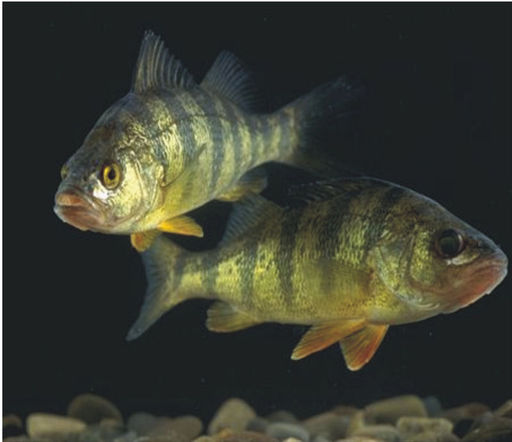

| Class | Distinguishing Traits | Example |
|---|---|---|
| Hagfish | They have a cranium but no backbone; they do not have jaws; their endoskeleton is made of cartilage; they are ectothermic. |
hagfish
|
| Lampreys | They have a partial backbone; they do not have jaws; their endoskeleton is made of cartilage; they are ectothermic. |
lamprey
|
| Cartilaginous Fish | They have a complete backbone; they have jaws; their endoskeleton is made of cartilage; they are ectothermic. |
shark
|
| Ray-Finned Fish | They have a backbone and jaws; their endoskeleton is made of bones; they have thin, bony fins; they are ectothermic. |
perch  |
| Lobe-Finned Fish | They have a backbone and jaws; their endoskeleton is made of bones; they have thick, fleshy fins; they are ectothermic. |
coelacanth
|
| Amphibians | They have a bony endoskeleton with a backbone and jaws; they have gills as larvae and lungs as adults; they have four limbs; they are ectothermic |
frog
|
| Reptiles | They have a bony endoskeleton with a backbone and jaws; they breathe only with lungs; they have four limbs; their skin is covered with scales; they have amniotic eggs; they are ectothermic. |
alligator
|
| Birds | They have a bony endoskeleton with a backbone but no jaws; they breathe only with lungs; they have four limbs, with the two front limbs modified as wings; their skin is covered with feathers; they have amniotic eggs; they are endothermic. |
bird
|
| Mammals | They have a bony endoskeleton with a backbone and jaws; they breathe only with lungs; they have four limbs; their skin is covered with hair or fur; they have amniotic eggs; they have mammary (milk-producing) glands; they are endothermic. |
bear
|